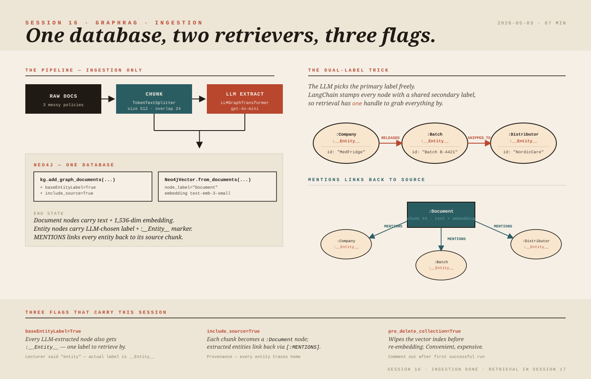

Build the graph.
Index the vectors.
One Neo4j database, two retrievers, three flags. Today is the half that runs offline — tomorrow's session is the half that runs every question.
(1) The "entity" secondary label is literally
__Entity__ with double underscores on both sides — verify with MATCH (n) RETURN DISTINCT labels(n).
(2) The parameter is baseEntityLabel (camelCase), not base_entity_label.
(3) LLMGraphTransformer lives in langchain_experimental — pin it.
(4) pre_delete_collection=True re-bills your embeddings every run; comment it out after the first successful index.
(5) AssemblyAI typos: "Fabco" → FobCo, "Richmond AG" → RhineChem AG, "Dosh Bank" → Deutsche Handelsbank, "Inno Terms" → Incoterms, "Med Fries" → MedFridge, "Epoch" → APOC.
Where we are
Session 15 covered the Cypher fundamentals — nodes, relationships, labels, properties, MATCH, WHERE, aggregation — and surveyed Neo4j editions (Community / Aura / Enterprise). Session 16 picks up the second project: wire a real document corpus into Neo4j as a knowledge graph and a vector store at the same time, using LangChain's LLMGraphTransformer to do the unstructured-text → nodes-and-relationships extraction. The session stops at the indexing step. Session 17 covers retrieval — fuzzy entity extraction from the user's question, graph traversal, vector similarity, and a RunnableParallel chain that fuses both before the LLM call.
Why a graph in addition to vectors
Vector RAG works well when answers are locally present in some chunk — one paragraph holds the answer and cosine similarity finds it. It struggles when the answer is scattered across reasoning chains: clause 14(b) refers to a memo FIN-HS-09, which itself depends on a definition in Annex D. Chunking can break those bridges; similarity over a chunk that mentions "downgrade" doesn't know that "downgrade" is gated by a separate adoption-score clause elsewhere.
A graph stores entities (companies, contracts, batches, SKUs, clauses) and the relationships between them as first-class objects. A question like "does this 22-minute excursion trigger quarantine, and can it be pre-released?" can be answered by traversing Batch ─[RELEASED_BY]→ Distributor ─[FOLLOWS_SOP]→ Policy. The graph gives the LLM a relational map; the vector store gives it the raw text. GraphRAG sends both to the LLM in the same prompt.
node — REL → node triples alongside the retrieved text chunks before it answers.Think of the graph layer as a read-optimised projection built off the same documents — like a Spring @QueryProjection or a CQRS read model. The source of truth is still the document text (your "command side"); the graph is a derived view shaped for relational lookup. The vector index is a second derived view shaped for similarity lookup. Both project from one source.
Neo4j as a two-in-one store
The lecturer's pitch: with the right plugins, one Neo4j database holds both the graph and the embeddings. No separate Pinecone / Chroma / FAISS. Mechanically:
- Each document chunk is stored as a node with label
Document. - That node gets a
textproperty (the chunk text) and anembeddingproperty (a 1,536-dimensional vector fortext-embedding-3-small). - A vector index is built over the
embeddingproperty; cosine similarity uses Neo4j's built-in HNSW backend. - Separately, each chunk's content is run through an LLM (
gpt-4o-minihere) that extracts entities + relationships; those become additional nodes (Company,Batch,Clause, ...) and edges (RELEASED_BY,QUARANTINED, ...), all linked back to the sourceDocumentnode by aMENTIONSedge.
So the same physical database stores: the raw chunks (with vectors) and the LLM-derived knowledge graph (with relationships). At query time the application hits both in parallel.
"Vector DB" inside Neo4j is just a property on a node + an HNSW index over that property. It is not a separate engine. The same Cypher you learned in Session 15 still applies; you simply have one more index type available.
Prerequisites: APOC, then a connection
Before anything below runs you need APOC ("Awesome Procedures On Cypher") installed as a Neo4j plugin. Neo4j Desktop → your database → Plugins → APOC → Install. LangChain's Neo4jGraph.refresh_schema() calls apoc.meta.schema() under the hood; without APOC you get cryptic procedure-not-found errors. (Bloom and the GenAI plugin are nice-to-have; APOC is the only hard requirement for this code path.)
The .env file holds four secrets — keep them out of source control:
NEO4J_URI=bolt://127.0.0.1:7687
NEO4J_USERNAME=neo4j
NEO4J_PASSWORD=<your-password>
NEO4J_DATABASE=batch5demo
OPENAI_API_KEY=<your-key>Loading the env, then creating the database programmatically:
import os, re
from dotenv import load_dotenv
from neo4j import GraphDatabase
load_dotenv(".env")
NEO4J_URI = os.getenv("NEO4J_URI", "bolt://127.0.0.1:7687")
NEO4J_USERNAME = os.getenv("NEO4J_USERNAME", "neo4j")
NEO4J_PASSWORD = os.getenv("NEO4J_PASSWORD", "")
NEO4J_DATABASE = os.getenv("NEO4J_DATABASE", "batch5demo")
def ensure_database_exists() -> None:
"""Create the named database if missing (Neo4j 5+, requires system DB permission)."""
if not re.match(r"^[a-zA-Z][a-zA-Z0-9_-]*$", NEO4J_DATABASE):
raise ValueError(f"Unsafe NEO4J_DATABASE name: {NEO4J_DATABASE!r}")
driver = GraphDatabase.driver(NEO4J_URI, auth=(NEO4J_USERNAME, NEO4J_PASSWORD))
with driver.session(database="system") as session:
session.run(f"CREATE DATABASE `{NEO4J_DATABASE}` IF NOT EXISTS")
driver.close()
ensure_database_exists()CREATE DATABASE ... IF NOT EXISTS is itself a Cypher statement — same language from Session 15, just executed against the system database. The lecturer's first run failed because the .env file wasn't saved (and later because the file extension was wrong); both are normal first-time gotchas. The re.match guard exists because the database name is interpolated into a Cypher string and Cypher only allows [a-zA-Z][a-zA-Z0-9_-]* for unquoted database names.
Then build the LangChain wrapper:
from langchain_neo4j import Neo4jGraph
from langchain_openai import ChatOpenAI, OpenAIEmbeddings
embeddings = OpenAIEmbeddings(model="text-embedding-3-small")
chat = ChatOpenAI(model="gpt-4o-mini", temperature=0)
kg = Neo4jGraph(
url=NEO4J_URI, username=NEO4J_USERNAME,
password=NEO4J_PASSWORD, database=NEO4J_DATABASE,
)
kg.refresh_schema()
print("Connection established and schema refreshed.")kg is the long-lived handle for everything that follows — kg.query(...) for raw Cypher, kg.add_graph_documents(...) for bulk writes. refresh_schema() pings the database for its current node-labels / relationship-types so LangChain can answer "what's in here?" questions later.
Neo4jGraph(...) is the DataSource + JdbcTemplate rolled into one bean. kg.query(...) is your raw execute(sql); the higher-level kg.add_graph_documents(...) is a domain-specific repository method built on top.
The corpus: three deliberately messy business documents
The code uses three short policy documents — picked because they're the kind of thing where pure-vector RAG fails. Every line is load-bearing and answers depend on conditional rules that reference each other:
- MedFridge cold-chain policy — batch B-4421 of MF-Insulin-Pro, courier Apex Cold, distributor NordicCare; quarantine rules vs pre-release exception conditioned on excursion duration, a Medical Affairs email, and a residual-risk form.
- HelioStack SaaS — Enterprise Agreement EA-2024-771 with ACME Corp — committed ARR, downgrade clauses 14(b) / 14(c), ASC 606 revenue memo FIN-HS-09, adoption-score gate at day 180.
- FobCo / RhineChem trade brief — letter of credit LCI-9001 from Deutsche Handelsbank, UCP 600 field 46A, Incoterms 2020 (CIF Hamburg vs FOB-on-B/L discrepancy), force-majeure addendum FM-22.
These documents are wrapped as langchain_core.documents.Document instances with page_content (the text) and a metadata dict (title, source, domain). Document is the same envelope used in Project 1's RAG code.
from langchain_core.documents import Document
raw_documents = [
Document(
page_content="POLICY PACK: MedFridge Ltd ...",
metadata={"title": "MedFridge cold-chain rules",
"source": "business:medfridge-policy-pack",
"domain": "pharma_logistics"},
),
# ... HelioStack EA, FobCo LC ...
]Chunking — same as plain RAG
Nothing new here. Same TokenTextSplitter used in Project 1, same chunk_size=512, chunk_overlap=24.
from langchain_text_splitters import TokenTextSplitter
text_splitter = TokenTextSplitter(chunk_size=512, chunk_overlap=24)
documents = text_splitter.split_documents(raw_documents)These chunks are what get embedded and what get fed to the LLM for entity extraction. One chunk → one Document node in Neo4j → one set of derived entity nodes pointing back to it via MENTIONS.
"Chunk size 512" here means 512 tokens (because TokenTextSplitter counts tokens), not 512 characters. A token is roughly ¾ of a word for English text. Don't confuse "chunk" (a slice of text) with "embedding dimension" (the length of the vector that represents that slice — 1,536 for text-embedding-3-small).
The new bit: LLMGraphTransformer
This is the lift that makes GraphRAG cheap to set up. You hand it an LLM and a list of Document chunks. It returns GraphDocument objects — Python objects containing nodes, relationships, and a back-pointer to the source document — without you having to define any ontology.
from langchain_experimental.graph_transformers import LLMGraphTransformer
llm_transformer = LLMGraphTransformer(llm=chat)
graph_documents = llm_transformer.convert_to_graph_documents(documents)
print(graph_documents[0]) # inspect what came backInternally, convert_to_graph_documents prompts the LLM with each chunk and asks it to extract entities and the relationships between them as structured JSON. The result is a list of GraphDocuments, each with:
nodes: e.g.Node(id='ACME Corp', type='Company', properties={})relationships: e.g.Relationship(source=..., target=..., type='SIGNED_AGREEMENT')source: the originalDocumentchunk
At this point nothing has been written to Neo4j yet — graph_documents is a Python list in memory.
LLMGraphTransformer lives in langchain_experimental, not the stable LangChain core. API surface and prompt internals can change between versions; pin langchain-experimental in requirements.txt when you build anything production-shaped.What the LLM actually decides
Two things to internalise:
- The "schema" is whatever the LLM picks. Node types might be
Company,Product,Clause,Batch,Person,Currency, ... — whatever this prompt produces for these documents. Run it twice and you'll likely get slightly different shapes. That's the price of not specifying an ontology upfront. - Node properties usually come back empty.
LLMGraphTransformerby default extracts entities and relationships but doesn't try to populate property dictionaries on the nodes. The substance lives in the nodeid(a human-readable string like"ACME Corp"or"Batch B-4421") and the relationship type (likeSIGNED_AGREEMENT). If you need rich properties on each entity you can passnode_properties=True(or a list of allowed keys) to the constructor — at the cost of more tokens per chunk and slower extraction.
The lecturer used gpt-4o-mini to save money. That's fine for class. In production the graph-extraction step is where model quality pays off: a stronger reasoning model picks up more entities, deduplicates them better, and produces cleaner relationship labels. Retrieval cost dwarfs the cost of one good extraction run — extraction happens once per document; retrieval happens on every question.
LLMGraphTransformer is shaped like a BeanPostProcessor that scans arbitrary input and synthesises bean definitions on the fly. The catch: the "definitions" are non-deterministic. Two runs over the same input can produce different bean wiring. Where the analogy breaks: Spring's processors are deterministic — same input, same beans. Treat LLMGraphTransformer's output as a starting point you might want to review, especially for high-stakes corpora.
The retrieval problem this creates — and the fix
Recall from Session 15: to query a Cypher graph you write things like MATCH (p:Person) RETURN p — you need to know the label to match on. If the LLM has invented 30 different node types across 3 documents, retrieval becomes a nightmare. You'd have to enumerate every possible label.
LangChain's fix: tell add_graph_documents to stamp every extracted node with a second, common label — __Entity__. The original LLM-chosen label stays (so a node can still be Company, Batch, Clause, ...) but it gets __Entity__ in addition. From Session 15 you already know a Cypher node can carry multiple labels (:Company:TechCompany) — this is just that same feature put to work.
kg.add_graph_documents(
graph_documents,
include_source=True,
baseEntityLabel=True,
)Two flags do the heavy lifting:
| Flag | What it does | Why you want it |
|---|---|---|
baseEntityLabel=True | Adds the secondary label __Entity__ to every node, plus a uniqueness constraint on id | One label to match on at retrieval time; deduplication of repeated entities across chunks |
include_source=True | Creates a Document node for each source chunk and links every extracted entity to it via [:MENTIONS] | Lets you trace any answer back to the chunk it came from (provenance) |
__Entity__ — with double underscores on both sides. You can verify by opening Neo4j Browser and running MATCH (n) RETURN DISTINCT labels(n). This matters because next session's fulltext index is created with FOR (e:__Entity__) ON EACH [e.id] — get the underscores wrong and the index doesn't apply.baseEntityLabel (camelCase). LangChain accepts both baseEntityLabel and include_source here, so it looks like it doesn't matter — but the camelCase form is what's documented and what later library versions standardise on.Topology after add_graph_documents
After the call, the graph looks like the diagram below — one Document node per chunk, fanning out via MENTIONS to the LLM-extracted entities, with domain relationships between those entities:
The lecturer's database after loading had 25 nodes all sharing the __Entity__ label plus their LLM-chosen labels, plus a small set of Document nodes connected by MENTIONS.
__Entity__ is a marker interface for the retrieval layer. The original label (Company, Batch) describes what the thing is; __Entity__ just says "this is searchable in our knowledge graph." Next session's retrieval code matches on __Entity__ to be polymorphic over node types — same way you might match on Identifiable to be polymorphic over JPA entity classes.
Indexing the vectors — Neo4j as a vector store
The graph half is done. The vector half uses Neo4jVector.from_documents, which:
- Calls the embedding model for each
Documentchunk. - Stores the resulting vector as a property on a
Document-labelled node in Neo4j. - Creates a Neo4j vector index so cosine-similarity lookups are fast.
from langchain_neo4j import Neo4jVector
vector_index = Neo4jVector.from_documents(
documents=documents, # the chunked Document list from §6
embedding=embeddings, # OpenAIEmbeddings instance
url=NEO4J_URI, username=NEO4J_USERNAME,
password=NEO4J_PASSWORD, database=NEO4J_DATABASE,
index_name="graphrag_classnote_vector",
node_label="Document", # which nodes get the embedding property
embedding_node_property="embedding", # the property name for the vector
text_node_property="text", # the property name for the chunk text
pre_delete_collection=True,
)Key parameters:
node_label="Document"— pick which nodes get embeddings. Here we embed the source chunks (one chunk = oneDocumentnode). You could in principle embed any other label (e.g. everyClause), but indexing the chunks is the common pattern because the chunk text is what gets stuffed back into the LLM prompt at retrieval time.embedding_node_property="embedding"— the property name where the vector is stored. After this runs, everyDocumentnode has anembeddingproperty of length 1,536.text_node_property="text"— the property name for the chunk text itself. If atextproperty doesn't already exist, this creates it.index_name="graphrag_classnote_vector"— names the vector index. Useful when you have multiple indexes (different corpora, different label families) in the same database.
pre_delete_collection=True IS A DEVELOPMENT-ONLY SWITCH. Setting this drops and rebuilds the entire vector index every time the script runs. Convenient when you're iterating, but every rerun costs another full embeddings invoice. In production, embed once, comment this block out, and let retrieval work against the cached index. The lecturer explicitly called this out: indexing is offline and runs once; retrieval is online and runs every question.Why the lecturer pointed at one specific node
The Document nodes already had a text property by the time Neo4jVector.from_documents ran, because add_graph_documents(..., include_source=True) had created them earlier and copied the chunk text into text. So Neo4jVector.from_documents here only needs to add the embedding property and build the index — it doesn't re-create the nodes. The two phases (graph + vector) layer onto the same Document nodes.
The non-Document entity nodes (:Company:__Entity__, :Batch:__Entity__, ...) are not embedded. The vector store only indexes the chunks. Retrieval over entities happens by a different mechanism — fuzzy fulltext search on the entity id, which we'll set up in Session 17.
What just happened, in one picture
The end state of this session is a single Neo4j database that holds three things layered together:
- Document nodes — one per chunk — carrying
textandembeddingproperties, indexed by a Neo4j vector index for similarity search. - Entity nodes — LLM-extracted from each chunk — carrying their LLM-chosen primary label and a shared
__Entity__secondary label. - Relationships —
MENTIONSfrom eachDocumentto the entities it spawned, plus domain edges (RELEASED_BY,CARRIED,SIGNED_AGREEMENT, etc.) between entities.
Visualise the database (Neo4j Browser → click on any Document node) and you'll see a "hub" pattern: the chunk in the centre, every entity it mentions splayed around it. Click an entity and you'll see the domain relationships that link it to entities from other chunks — the cross-document reasoning that pure vector RAG would have missed.

What gets imported (and why)
The full set of imports in this session — annotated, because several appear before they're used:
from langchain_core.documents import Document
from langchain_core.output_parsers import StrOutputParser # next session
from langchain_core.prompts import ChatPromptTemplate
from langchain_core.runnables import RunnableLambda, RunnableParallel # next session
from langchain_experimental.graph_transformers import LLMGraphTransformer
from langchain_neo4j import Neo4jGraph, Neo4jVector
from langchain_neo4j.vectorstores.neo4j_vector import remove_lucene_chars # next session
from langchain_openai import ChatOpenAI, OpenAIEmbeddings
from langchain_text_splitters import TokenTextSplitter
from pydantic import BaseModel, Field # next sessionThe lecturer flagged RunnableLambda / RunnableParallel as the imports for next session's retrieval chain — they exist because the final pipeline runs two retrievers in parallel (graph + vector) and merges their output. remove_lucene_chars and Pydantic are also next-session: they support entity extraction from the user's question and fuzzy fulltext matching.
RunnableParallel ≈ Spring's @Async + CompletableFuture.allOf(...): fan out to two retrievers concurrently, gather the results, hand the joined output to the next stage. Same fork-join shape, lighter syntax.
Forward reference — what Session 17 covers
Today's notes intentionally stop at indexing. The retrieval half — the more involved piece — is the agenda for the next session:
- Entity extraction from the user's question with a Pydantic-typed structured output.
- A fulltext index on
__Entity__.idso user-mentioned entities can be matched fuzzily (typo-tolerant, edit-distance 2). - A
!MENTIONSgraph traversal — pull every domain relationship around the matched entity but skip theMENTIONSback-links (which only point back at source chunks). - A two-branch retriever: graph traversal results + vector similarity results, concatenated.
- A
RunnableParallelchain that fans these out and pipes the merged context into the final LLM prompt. - Demo questions that stress reasoning across the three corpora — including a 22-minute excursion near the policy boundary and a downgrade exactly at the 20% threshold.
Common pitfalls (paid for in class)
- Neo4j Desktop not running. The Bolt driver returns "ServiceUnavailable / connection refused." Start the DBMS in Neo4j Desktop before running Python.
- APOC plugin missing.
kg.refresh_schema()fails withprocedure apoc.meta.schema not registered. Install APOC via the Plugins tab. .envfile not saved or wrong extension. Symptom:OPENAI_API_KEYends up empty and the OpenAI call raises "no API key in source code." The lecturer hit this twice — once because the file wasn't saved, once because the extension was off.- Database name typo or reuse. A stopped database silently fails authentication. Always check the database is Started in Neo4j Desktop before connecting.
- Re-running indexing every iteration.
pre_delete_collection=Truere-charges your embeddings invoice each run. Once embeddings are stable, comment the entireNeo4jVector.from_documentsblock out and let retrieval use the existing index.
Glossary
- APOC
- "Awesome Procedures On Cypher," the standard Neo4j plugin that adds schema introspection (
apoc.meta.schema), bulk operations, and many utility procedures. Required by LangChain'sNeo4jGraph.refresh_schema(). __Entity__- The secondary label LangChain stamps on every LLM-extracted node when you pass
baseEntityLabel=True. Note the double underscores. Used as a marker for retrieval. MENTIONS- The relationship LangChain creates when you pass
include_source=True, connecting each LLM-extracted entity back to theDocumentnode (source chunk) it was extracted from. Gives provenance and supports the "skip-source-link" pattern in traversal. Documentnode- One node per chunk, holding the chunk's text and (after vector indexing) its embedding. The vector index is built over the
embeddingproperty of these nodes. GraphDocument- LangChain's in-memory representation of an LLM extraction result for one source
Document: a list ofNodeobjects + a list ofRelationshipobjects + a pointer to the source. - HNSW
- Hierarchical Navigable Small World, the approximate-nearest-neighbour algorithm Neo4j uses under the hood for vector indexes. You don't have to configure it by hand for this code path.
LLMGraphTransformerlangchain_experimental.graph_transformers.LLMGraphTransformer. Wraps an LLM call that converts unstructured text chunks intoGraphDocuments without requiring you to specify an ontology.- Ontology
- The agreed-upon set of node labels and relationship types. With
LLMGraphTransformeryou give up control of the ontology in exchange for not having to hand-author it. pre_delete_collectionNeo4jVector.from_documentsparameter; drops and rebuilds the vector index on every call. Convenient for iteration, expensive for billing. Turn it off after the first successful run.refresh_schema()Neo4jGraphmethod that re-queries the database for its label/relationship inventory. Calls APOC under the hood.text-embedding-3-small- OpenAI's small embedding model. 1,536-dimensional output. Cheaper than
text-embedding-3-large; sufficient for class-scale corpora.